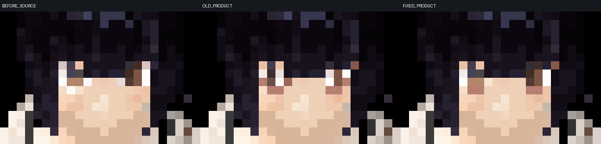
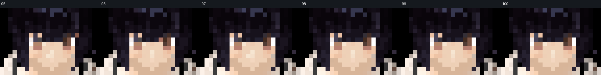
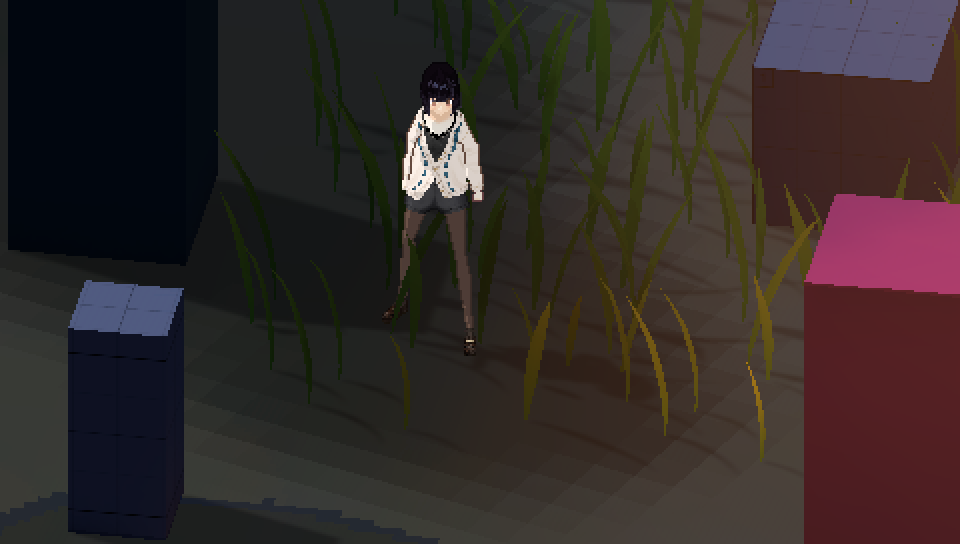

실제 제품 compute에 적용·컴파일했습니다. 기존 사용자 변경이 섞인 제품 파일은 통째로 stage하지 않고, 정확한 패치와 현재/이전 소스·실험 증거를 보관합니다.
같은 프레임의 실제 baseline과 S0~S3를 사용합니다. 가운데는 기존 Evaluate의 쓰기 격리 GPU 재생, 오른쪽은 수정된 실제 Evaluate입니다. 별도 Play의 다른 source를 동일 입력인 것처럼 비교하지 않습니다.

6연속 프레임: 보호13셀/프레임, 같은 입력에서 변경10셀, 보호·예약 효과 밖 RGB 오차0. iris8셀 유지. 보존 안검의 중복1셀은 매 프레임 제거했습니다. 팔레트 보존 셀의 sRGB8 오차0이며 색 출처와 native UV/primitive를 기록했습니다.

미해결: 미보존 쪽 안검은 native 면적 반올림·순위에 따라 추가 셀이2→1로 변합니다. 전체 눈 상태 bank/공동 곡선·가림 계약과 소수 좌표 시간 캐시는 완성되지 않았습니다. 매우 짧은 bin0 실제6프레임이며 보행·회전·blink 성공의 근거가 아닙니다. 아래는 실제 수정 출력 전체 화면입니다.

Edit 복귀, 기존 dirty29·scene·옵션·time·pipeline·global 확인, RT30→30. PlayerSettings 및29 dirty 내용은 동일합니다. 비dirty AssetImporter1개의 Play후 identity는 확인불가입니다. Unity 내부 allocated +32.03MiB는 물리RAM/누수 확정이 아닙니다.
마지막 경고 정리는 유효 표본 인덱스16개에서 동치인 bit 연산과 변수 초기화만 변경했습니다. 이후 compute compile·native 비교는 통과했으며 추가 Play는 하지 않았습니다.
실제 검증 · 최종 컴파일 · 제품 적용 패치 · 오프라인 재현 검사
재현: numpy가 있는 Python으로 test_archive76.py를 실행합니다. CUA·앱 종료·SaveAssets·reset·push를 사용하지 않았습니다.